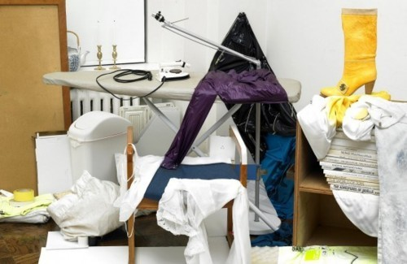

Mon, 14 Nov 2011 02:23:00 · design · typography · photography
Alphabets Everyday

Brilliant artistic assembly of alphabet series made of everyday object by Austrian photographer, Bela Borsodo. See here to see more of this awesome project.